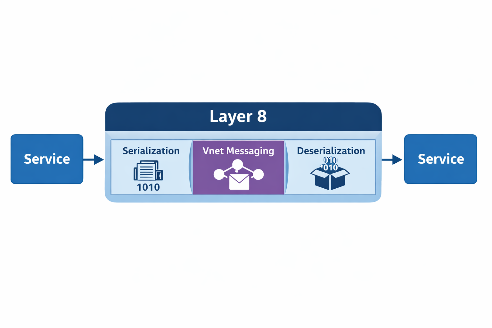

Сериализация
Акт сериализации
Когда процесс хочет поделиться частью своего состояния в памяти с другим процессом, он должен преобразовать это состояние в последовательность байтов и передать их по сети. Принимающая сторона затем должна восстановить пригодное для использования представление из этих байтов.
Этот акт называется сериализацией.
В большинстве систем сериализация реализуется непосредственно внутри прикладного кода:
- провайдер явно преобразует модель в байты,
- потребитель явно преобразует байты обратно в модель.
В результате прикладная логика, транспортные задачи и эволюция модели оказываются тесно связанными.
Сериализация и симметрия
Сериализация всегда подразумевает симметрию. Отправитель и получатель должны согласовать значение и структуру передаваемых данных. Сериализации без симметрии не существует.
Режим отказа в распределённых системах — это не наличие симметрии как таковой. Проблема в том, что симметрия обеспечивается вручную, повторно и непоследовательно в разных приложениях.
Когда каждый провайдер и потребитель реализует собственную логику сериализации и десериализации:
- эволюцию модели приходится координировать между кодовыми базами,
- несоответствия версий обнаруживаются во время выполнения,
- ошибки сериализации дублируются между сервисами,
- и разработчики приложений обременены инфраструктурными задачами.
Сериализация и десериализация должны принадлежать инфраструктуре, а не приложению, потому что дублирование этой логики между командами умножает сложность, вынуждает к коррелированным изменениям кода и срокам поставки и превращает эволюцию модели в организационное узкое место, а не в платформенную задачу.
Что меняет Layer 8
Layer 8 не пытается ослабить или избежать симметрии сериализации. Вместо этого он полностью убирает сериализацию и десериализацию из прикладного кода.
И провайдеры, и потребители отвязаны от преобразований модель-в-байты и байты-в-модель. Приложения отвечают только за понимание и применение доменной логики к моделям.
Понимание означает, что и провайдер, и потребитель знают модель и согласны с тем, что представляет каждый атрибут и каково его логическое значение. Это не включает никакой ответственности за кодирование или декодирование байтов.
Сериализация становится возможностью платформы.
В Layer 8:
- провайдер передаёт экземпляр модели платформе,
- платформа сериализует его для транспортировки,
- принимающая платформа десериализует полезную нагрузку,
- и потребитель получает пригодное для использования представление без выполнения какой-либо логики декодирования.
Такое разделение позволяет обеспечивать симметрию централизованно и последовательно, а не поддерживать её вручную в каждом сервисе.
Диаграмма границ ответственности

Рисунок: Взаимодействие сервис-сервис, при котором сериализация, обмен сообщениями и десериализация полностью принадлежат Layer 8.
Эта диаграмма делает границы ответственности явными. Приложения никогда не взаимодействуют с байтами. Все преобразования модель-в-байты и байты-в-модель принадлежат Layer 8 и опосредованы через обмен сообщениями Vnet.
Реестр типов
Поскольку сериализация больше не принадлежит ни провайдеру, ни потребителю, Layer 8 требует авторитетного механизма для разрешения идентичности и восстановления типов.
Эту роль выполняет Реестр типов.
Реестр типов является авторитетным источником для:
- идентичности типов, передаваемых по сети,
- отображения между идентификаторами типов и определениями моделей,
- выбора сериализатора и десериализатора,
- и правил, необходимых для восстановления моделей независимо от прикладного кода.
Реестр позволяет Layer 8 десериализовать полезные нагрузки даже тогда, когда потребляющее приложение не было скомпилировано с конкретным типом модели.
Десериализация создаёт экземпляр модели или модельно-агностичное представление, которое может быть маршрутизировано, проверено, сохранено, перенаправлено или впоследствии привязано к доменной логике.
Понимание модели является необязательным и происходит только тогда, когда приложению нужно применить бизнес-поведение.
Механизмы, которые делают это возможным, включая модельно-агностичные представления, разрешение типов во время выполнения и вычисление дельт, подробно рассматриваются в главе Модельно-агностичная среда выполнения: данные без схем.
JSON vs. Protocol Buffers
JSON — один из наиболее часто используемых форматов сериализации на сегодняшний день. Он широко применяется для взаимодействия с пользовательскими интерфейсами и внешними системами.
Рассмотрим следующий пример JSON:
{
"employees": [
{
"id": 101,
"name": "Alice Johnson",
"role": "Software Engineer",
"department": "Platform"
},
{
"id": 102,
"name": "Bob Martinez",
"role": "DevOps Engineer",
"department": "Infrastructure"
},
{
"id": 103,
"name": "Carol Lee",
"role": "Product Manager",
"department": "Product"
}
]
}Помимо самих данных, JSON несёт значительные структурные накладные расходы. Имена полей и разделители повторяются по всему сообщению, увеличивая размер полезной нагрузки и затраты процессорного времени.
Protocol Buffers используют другой подход. Когда обе стороны уже знают порядок и значение полей, формат передачи не нуждается в повторном кодировании меток.
Для наглядности (это не точный формат передачи) те же данные могут выглядеть так:
101Alice JohnsonSoftware EngineerPlatform102Bob MartinezDevOps EngineerInfrastructure103Carol LeeProduct ManagerProductProtobuf-объект — дельта-обновления
В реальных системах модели сложны и глубоко вложены. Они часто изменяются, но редко целиком.
Традиционные сериализаторы повторно передают полные объекты, даже когда изменилось лишь небольшое подмножество полей.
Это не просто неэффективность. Это имеет прямые экономические последствия.
Экономическое воздействие полнообъектных обновлений
Повторная передача полных объектов увеличивает затраты по трём направлениям:
- Пропускная способность: ненужные байты потребляют сетевую ёмкость и увеличивают стоимость исходящего трафика.
- Процессор: повторная сериализация и десериализация неизменённых данных расходует вычислительные циклы.
- Координация: большие полезные нагрузки усиливают влияние изменений схемы, увеличивая риск и стоимость эволюции.
Поскольку сериализация и десериализация принадлежат платформе, а не отдельным приложениям, Layer 8 может решать эти проблемы структурно, вместо того чтобы вынуждать каждую команду заново реализовывать логику оптимизации или координировать изменения схем между сервисами.
Layer 8 вводит концепцию Protobuf-объекта для структурного решения этой проблемы.
Protobuf-объект — это сериализатор, который умеет:
- сериализовать любой экземпляр модели или атрибут,
- вычислять изменения между версиями,
- и передавать только дельту.
Почему дельты важны
Обновления на основе дельт снижают потребление пропускной способности, передавая только то, что изменилось. Они уменьшают нагрузку на процессор, избегая повторной обработки неизменённых полей.
Что ещё важнее, они снижают стоимость координации. Когда только изменения пересекают границы сервисов, эволюция модели становится локальной. Малые изменения остаются малыми.
Это меняет экономику распределённых систем:
- пропускная способность масштабируется с изменениями, а не с размером модели,
- затраты процессора масштабируются с мутациями, а не с состоянием,
- и эволюция схемы больше не требует синхронного общесистемного согласования.
Избегая повторной передачи полных объектов, Layer 8 ограничивает радиус поражения изменений и улучшает как техническую масштабируемость, так и организационную скорость.
Механика вычисления дельт модели рассматривается в главе Модельно-агностичная среда выполнения: данные без схем.
Элементы
Взаимодействия сервисов сильно различаются. Одни операции возвращают единичный результат. Другие возвращают коллекции, потоки или ошибки.
Обработка этих вариаций обычно приводит к фрагментированным API и логике специальных случаев.
Layer 8 вводит концепцию Элементов для нормализации этих взаимодействий.
Элементы предоставляют единообразную оболочку для запросов и ответов, независимо от кардинальности или типа операции. Они позволяют потребителям рассуждать о взаимодействиях единообразно, в то время как Layer 8 обрабатывает сериализацию, транспорт и восстановление.
Централизация сериализации и десериализации в Layer 8 создаёт основу для контролируемой эволюции во время выполнения, эффективных обновлений на основе дельт и единообразных взаимодействий сервисов. Убирая механику сериализации из прикладного кода, Layer 8 позволяет моделям развиваться без координированных повторных развёртываний, ограничивает стоимость и радиус поражения изменений через дельты и предоставляет единообразную оболочку для API через Элементы. Вместе эти свойства переводят распределённые системы от хрупких, координационно-тяжёлых проектов к архитектурам, где изменения ожидаемы, ограничены и экономически устойчивы.
Элементы играют центральную роль в API Layer 8 и подробнее рассматриваются в главе API и язык запросов.